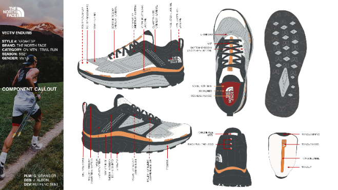
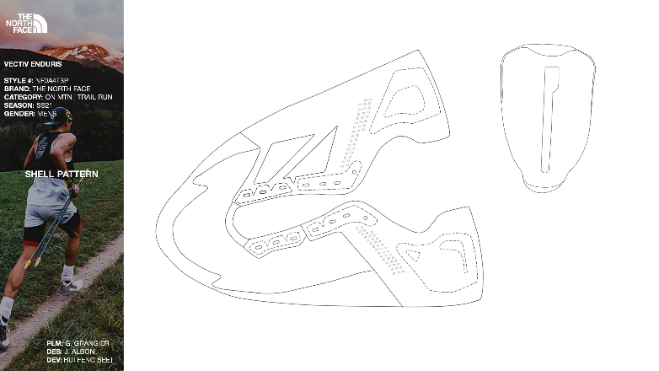
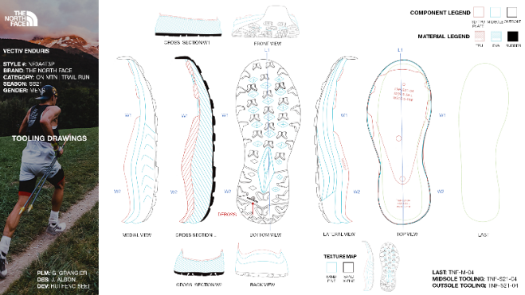
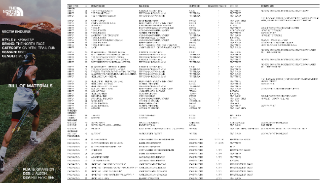
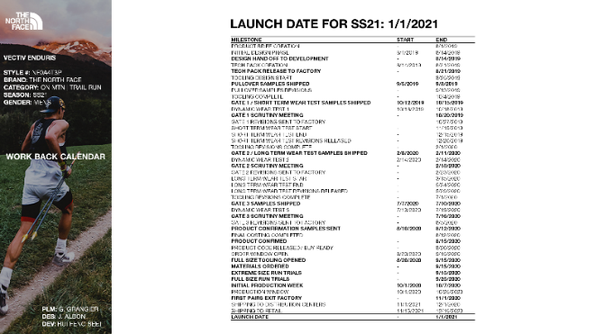

Capstone project for a Footwear Product Development course at Lasell University. The deliverable was a complete tech pack, developed in two weeks by dissecting an existing shoe. I selected The North Face Vectiv Enduris as my subject.
I developed an understanding of footwear product development: fit, function, profitability, sustainability, manufacturability, on-time delivery, and design. Building the tech pack gave me insight into the roles of designers, product line managers, developers, and factories, and hands-on exposure to the components of a real tech pack: component/material/construction callouts, shell patterns, tooling drawings, bill of materials, wear test plans, and work-back calendars.




